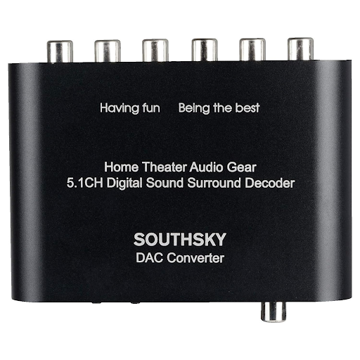

Home
Power Amplifier
Power Amplifier for built-in speakers
Power Amplifier
Today, almost everyone has a smart TV, with many also having a speaker system built into their . I wanted to connect my TV to the speaker system without having to spend a ton of money, or buy something big and ugly.


I searched online for a device which can decode Digital Audio output from TV through Optical Toslink into 5.1 analog signals, and amplify these 6 channels so that the signals are strong enough to drive the passive speakers. However, that kind of device doesn’t exist. I found a Digital to 5.1 CH converter in Amazon:
I built my design based off the following datasheet:

Components:
Board:
Finished Product:
Last words: